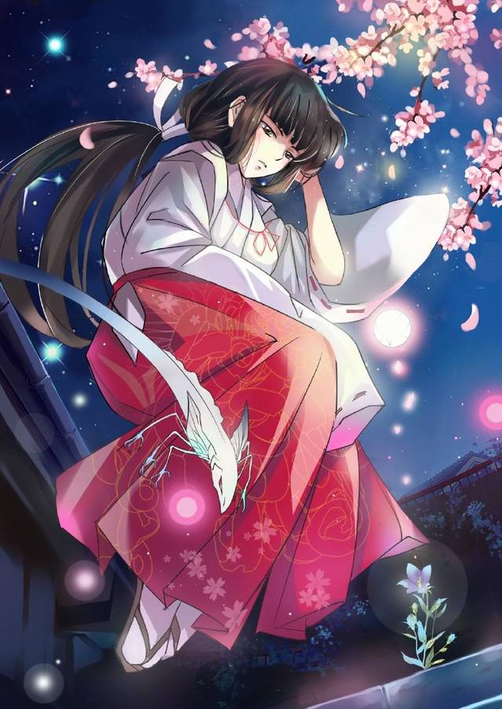
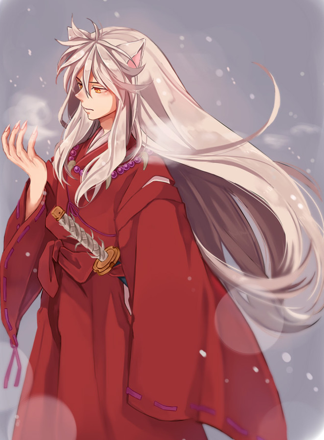

桔梗，战国时代灵力数一数二的巫女，负责守护及净化四魂之玉，以强大的灵力与精准的箭术击退对玉虎视眈眈的妖怪们 ， 是犬夜叉最心爱的女子之一。后来桔梗被暗恋者鬼蜘蛛所嫉妒。 鬼蜘蛛托生的半妖奈落设计使二人反目成仇。重伤的桔梗忍痛将携玉逃跑的犬夜叉封印，随后带玉身亡。

犬夜叉,是大妖怪犬大将与人类公主十六夜所生的半妖， 因为半妖身份而被人类和妖怪所排斥，为此犬夜叉想通过四魂之玉的力量使自己变成完全的妖怪， 后在争夺四魂之玉中爱上了人类女子桔梗而想变成人类，后来被奈落使用离间计陷害， 与桔梗反目成仇，在盗取四魂之玉时，被桔梗封印五十年，桔梗带玉身亡。